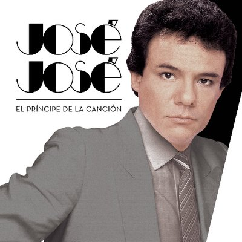

José Rómulo Sosa Ortiz (Clavería, Azcapotzalco, Ciudad de México, 17 de febrero de 1948 - Homestead, Florida, 28 de septiembre de 2019), fue un cantante, músico, productor musical y actor ocasional mexicano mejor conocido bajo su nombre artístico, José José.
Nacido en una familia de músicos, José comenzó su carrera musical en su adolescencia tocando la guitarra y cantando serenatas. Más tarde se unió a un trío de jazz y bossa nova donde cantó y tocó el bajo y el contrabajo. José encontró el éxito como solista a principios de la década de 1970.
Demostrando su habilidad vocal con una impresionante interpretación de la canción «El triste» en el segundo Festival de la Canción Latina celebrado en Ciudad de México en 1970, subió a las listas latinas durante esa década.
Click aquí para ver su discografía